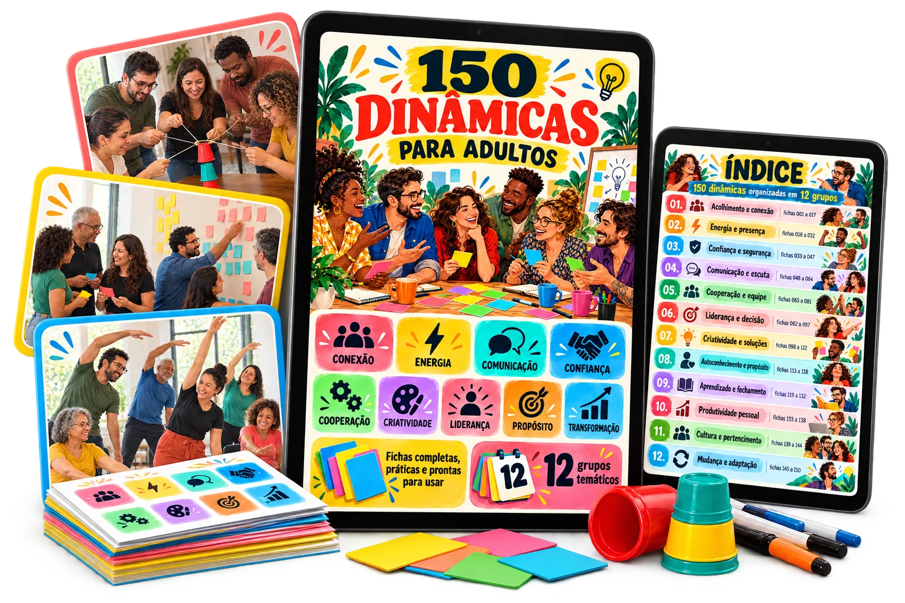

150 dinâmicas prontas para conduzir grupos com mais participação, conexão e propósito.
Tenha sempre a dinâmica certa para o seu próximo encontro.
Conduza encontros mais participativos com 150 dinâmicas prontas para aplicar.
Do objetivo ao fechamento: 150 dinâmicas completas para grupos de adultos.
Menos improviso, mais participação: 150 dinâmicas com ficha completa.

Escolha o objetivo do encontro, encontre a dinâmica adequada e siga uma ficha completa com tempo, materiais, passo a passo e perguntas de fechamento.
Escolha pelo objetivo e aplique com segurança — cada ficha traz materiais, tempo, passo a passo e debriefing.
Três passos entre a necessidade e a aplicação.
Escolha o objetivo do encontro
Acolher, energizar, decidir, fechar um ciclo. Use o índice para chegar ao grupo temático certo.
Consulte a ficha da dinâmica
Confira participantes, tempo, energia, exposição e materiais para ver se ela combina com o seu grupo.
Siga as instruções e conduza o fechamento
Aplique o passo a passo e use as perguntas de debriefing para conectar a experiência ao aprendizado.
Veja o que você vai receber


O encontro está marcado. A dinâmica, ainda não.
Conduzir grupos de adultos exige mais do que uma boa ideia. Exige escolher bem e saber aplicar.
{{ p.text }}
Tudo o que você precisa, em uma única ficha.
Cada uma das 150 dinâmicas segue a mesma estrutura. Você sabe onde procurar cada informação.

Fichas individuais: consulte na tela, apresente ou imprima.
O que muda na sua preparação.
Uma dinâmica para cada momento do encontro.
{{ g.name }}
{{ g.desc }}
Onde a coleção entra no seu trabalho.
Nem toda dinâmica serve para todo contexto. Por isso a organização por grupo e os critérios de cada ficha ajudam você a escolher a opção mais adequada.
Para quem é
Para quem não é
Para ser transparente, este material não é:
150 Dinâmicas para Adultos — Edição Vibrante

Garantia de 7 dias
Acesse o material, explore as fichas e veja se ele atende aos seus encontros. Se dentro de 7 dias você achar que não é para você, basta solicitar o reembolso.